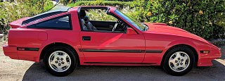

-
Hello everyone,
I just picked up an '85 Turbo GLL, and I couldn't be happier with it. I've scoured the forums and the various sites like the z31.com FAQ so I've seen lots of info but I'm hoping someone with experience can provide more specifics on what I'm looking to do.
I don't plan on going crazy, I'm just interested in a modest power bump with reliability and a smooth power band being key, 230-250 crank power would be plenty high for me. The car already has a K&N intake on it and I'm looking into the CM turbo back exhaust already, though the first thing I'm going to do is a 60k maintenance and get the timing belt and all that changed. Surprisingly, the digital dash is fully functional, along with all the readouts as best I can tell. I got stuck in traffic for almost 2 hours in 85 degree weather on the way home from picking it up and the car did great so I'm pretty confident the oil pressure and temperature readout is accurate as well.
1) When I do the maintenance, should I bother with the CHTS? It seems to be working fine but I know these go out constantly so I'm wondering if I should just replace it for future-proofing, or take an "if it ain't broke, don't fix it stance" here.
2) Aside from the intake and exhaust, what modifications would you all recommend for a small but reliable power bump? A small boost controller bump up to 6psi maybe? Once you get past the intake/exhaust sections, the turbo FAQ at z31.com seems to be geared mainly towards making big gains of wheel horsepower so I'm not sure where to go next for some minor increases.
Thanks!
 -
The internal wastegate is set to 6.8 psi from the factory. MBC set to 10 psi with the exhaust, intake, and JWT Performance Optimized Programmed (P.O.P) ECU will get you about 225 horsepower at the crank depending on the condition of your engine. Anything beyond that and you'll need an intercooler and a way to increase fuel pressure because these cars lean out up top. Maximum power available on stock 260cc injectors is 260-275 horsepower. If you want to push it even further, you'll need a bigger MAF, bigger injectors and a standalone ECU e.g., Megasquirt or NISTUNE. And yes, you should do the CHTS and CHTS sub-harness when you do the timing belt. That way you can do it when you've got everything apart and won't have to go back in there if the CHTS goes on the fritz.A small boost controller bump up to 6psi maybe?Last edited by daniel_pearce; 10-22-2017, 07:15 PM. -
Welcome to the Z family. That's a super cleaning looking Z! -
What daniel said, minus the JWT ECU. -
Thanks y'all, around 225 is good enough for me so I'll stick to the intake/exhaust/10psi combo for now. And thanks Dunkine, she's a real beaut that was garage kept and only has minor interior wear on the driver's seat and arm rest lid. Luckily for me the previous owner had the new K&N intake professionally installed, including some custom piping, and they just had the rack & pinion and power steering pump replaced, but it does have your standard 32 year old Z31 problems.
The cold start is horrendous, and the second the temp gauge hits center it immediately clears up. Going to rip off the AACV, EGR, and IACV to clean them all out thoroughly, and probably replace the TPS, hoping that will clear that mess up. The radiator also appears to be leaking coolant, upon a closer inspection today, so that'll be on my list of initial repairs. Oh and of course, the AC and tape deck don't function, as is expected! Everything else, including the original electronic suspension, works great though and the car drives like a dream so I'm quite happy with it. -
Stock Z31 MAF is good for 500whp and proven once you account for the weird voltage offset in the Z31 MAF. Nistune and stock Z31 MAF, and at least 450cc injectors is all you need for tuning purposes. Fuel pump upgrade if you determine your fuel pressure is not up to spec while in boost.
1986 300ZX Turbo…sold
1990 Skyline GT-R…new money pit
2014 Juke Nismo RS 6-speed…daily -
87T or 87NA ECU would be a great mod for you if you plan to go the Nistune setup. Once you do that, the notorious lean start issue(found in 84-85 ECUs) would disappear. I would highly recommend a wideband O2 sensor to see what your AFRs(Air-fuel ratio) are. If they are decent with 10psi, you could maybe even go to 11-12 psi. If you do raise the boost, do keep in mind you might have to run a higher octane gas to prevent predetenation, but you *should* be fine due to your Compression ratio being lower than a NA2T engine.
This list should be fine though:
CM 3in exhaust
K&N intake(already installed)
Manual boost controller
Wideband O2 sensor1986 z31 NA2T(Motor is being assembled)
1984 z31 Turbo 5 speed(slowly being parted out)

Copyright © 2006–. All rights reserved. Privacy Policy